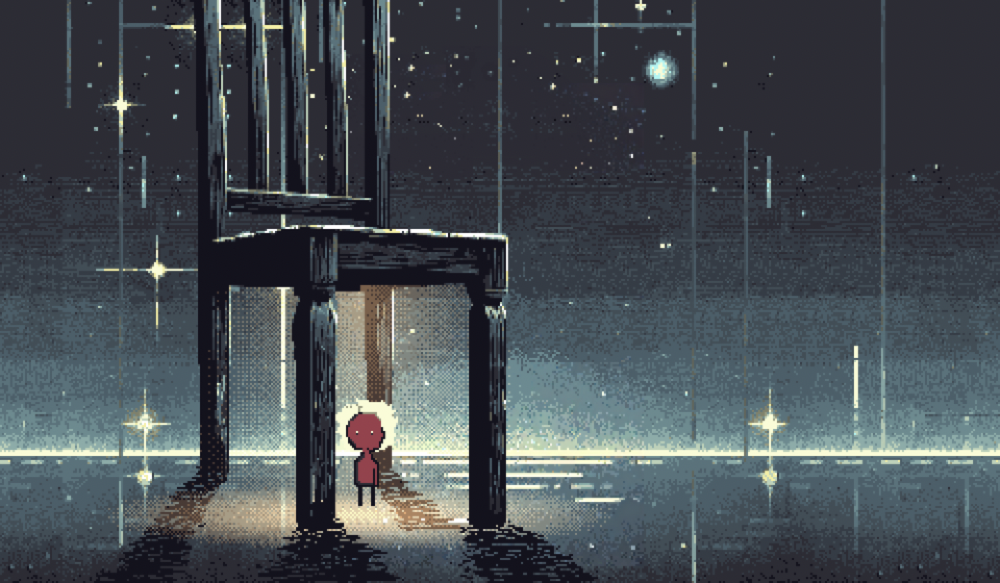

A quiet pixel-art game. Foton, a small figure of light, walks through a cold void, and the world shows where his light falls. Still scenes, played with the mouse.

Chapter one has three scenes: coming out of the dark, rain under a chair, the mirror. The path leads to the mirror. The first milestone is chapter one playable from a link.
The hero and his sprites: walking left and right, standing, seen from the back, and twelve versions of his look. Scene two is drawn layer by layer in Aseprite and has been moved into Godot, the engine of the game. Its first playable version is being tried now.
Machinarium, Samorost, Gorogoa, The Longing, and the cartoons of Ivan Maximov.
The game is back in work. Scene two moved from Aseprite into Godot, layer by layer.
The game stopped and waited for co-developers.
Scene two, under the chair, drawn in Aseprite, with a 35-second clip and the line “Boundless space, and I… under a chair”.
The spine of the story: twelve steps of one journey.